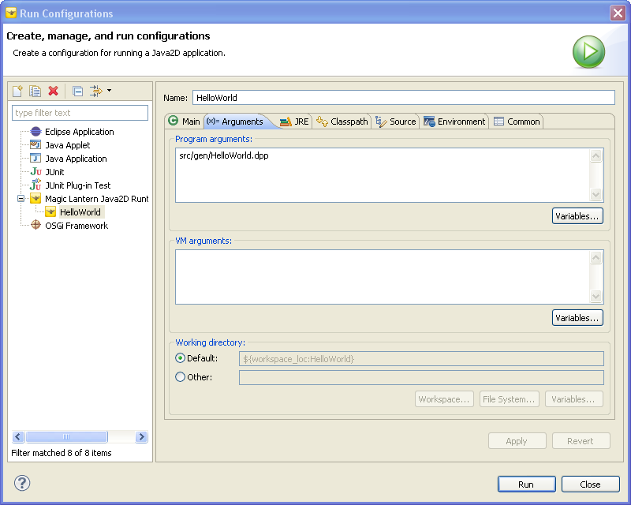

This document discusses how to execute a Magic Lantern Title. The first section identifies how to run the title from within the Magic Lantern Studio IDE. The second section discusses how to run the title from the redistributable application bundle.
After creating a Magic Lantern Project using The Studio, the application developer will wish to execute and test his/her title. This may be done without leaving the IDE. The Studio uses the Eclipse launch configuration mechanism for running a title within the framework of the IDE. A launch configuration is a description of how to launch and execute a program. Launching in Eclipse is closely tied to the infrastructure for debugging, enabling the developer to make the logical progression from running the title to interactively debugging the title.
A launch configuration is created using an Eclipse wizard. To create a new configuration, use "Run->Run Configurations..." from the main Eclipse menu bar. This will start the launch configuration wizard dialog (see Figure 3.1)
Figure 3.1: Magic Studio Launch Configuration Wizard
Select the "Magic Lantern Java2D Runtime" entry on the left-hand side of the dialog. The entry is highlighted in Figure xxx.
Next press the 'New' button to create a configuration of the selected type. Doing so will create a new launch configuration for executing your title. Figure 3.2 shows an example the new configuration.
Figure 3.2: Launch Configuration for HelloWorld Title
If you are following along in the "Magic Lantern Quick Start Guide", creating your first title using the HelloWorld template, then fill in the information for launching your title. Type in the "Name" of your launch configuration (i.e. HelloWorld), the Project (i.e HelloWorld), and the main class of execution (i.e. helloworld.title.HelloWorld).
If you choose to Run the application at this time, then you will see the following message printed to your Eclipse Console: "usage: HelloWorld <file>". The title is telling you that you need to provide a Digital Playprint file. The DPP file was generated for you when you created the project. It can be found in then "src/gen" directory and is called "HelloWorld.dpp".
To specify the Digital Playprint, select the "Arguments" tab.

Figure 3.3: Launch Configuration Arguments for HelloWorld
Type in "src/gen/HelloWorld.dpp" into the Program arguments text box. Select "Apply" to finalize your configuration.
Selecting "Run" will now launch your application title. It should look like this:

Figure 3.4: HelloWorld Title Execution
There are several ways to stop the title. Since the title is a Java application, you can simply select the Close button ('X') in the application window. Another way to stop title execution is to use the Debg perspective.
To stop title execution using the Magic Lantern Studio Debug perspective, do the following:
The Title Application Bundle is a redistributable Java archive, or jar file. To run the HelloWorld title from the application bundle, the following steps should be taken: